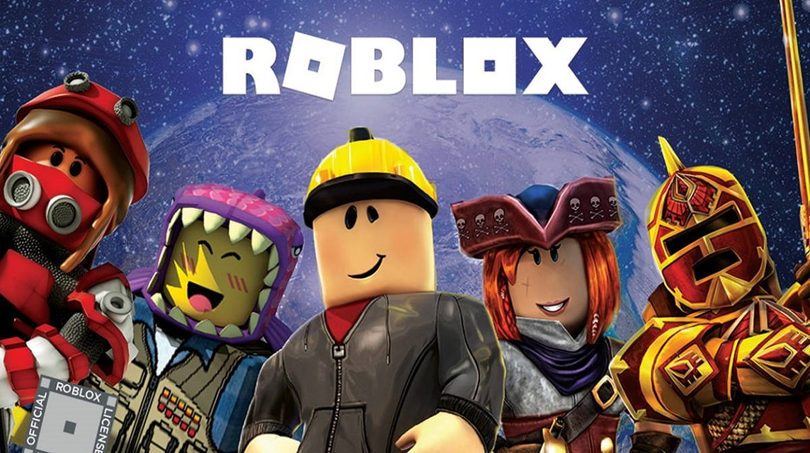

Roblox створили 2004 року американці Девід Башуцкі та Ерік Кассел. Спочатку, розглядалась назва DynaBlocks, проте проєкт був випущений під назвою Roblox, придуманою Девідом.
Більшу частину часу платформа була відносно невеликою, почавши суттєве розширення після 2019 року, це зростання було прискорене пандемією COVID-19.
До 2019 року компанія залучила $865 млн інвестицій, 2020 року вийшла на фондову біржу Нью-Йорка через прямий лістинг. Першого ж дня її оцінка становила $45 млрд.
У серпні 2020 року Roblox мав 164 млн активних користувачів щомісяця, включаючи більш ніж половина всіх американських дітей віком до 16 років.
Roblox створили 2004 року американці Девід Башуцкі та Ерік Кассел. Спочатку, розглядалась назва DynaBlocks, проте проєкт був випущений під назвою Roblox, придуманою Девідом.
Більшу частину часу платформа була відносно невеликою, почавши суттєве розширення після 2019 року, це зростання було прискорене пандемією COVID-19.
До 2019 року компанія залучила $865 млн інвестицій, 2020 року вийшла на фондову біржу Нью-Йорка через прямий лістинг. Першого ж дня її оцінка становила $45 млрд.
У серпні 2020 року Roblox мав 164 млн активних користувачів щомісяця, включаючи більш ніж половина всіх американських дітей віком до 16 років.
Roblox розміщує багато популярних ігор створених на цій платформі. Станом на травень 2020, деякі найпопулярніші ігри на Roblox мали понад 10 мільйонів активних гравців на місяць. Станом на серпень 2020 року, понад 20 ігор отримали мільярд відвідувань і понад 5000 ігор — мільйон відвідувань гравцями. Видавець ігор Джо Ференч (Joe Ferencz) зауважив у виданні TechCrunch, що ігри на Roblox здебільшого відходять від традицій відеоігор жанру F2P і спрямовані скоріше на моментальне задоволення. Тож гравці на платформі радше уникають тривалих і детальних туторіалів.